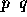
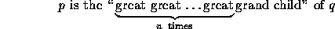
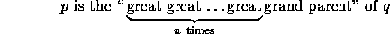
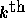
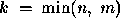
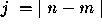

| Climbing Trees |
Expression trees, B and B* trees, red-black trees, quad trees, PQ trees; trees play a significant role in many domains of computer science. Sometimes the name of a problem may indicate that trees are used when they are not, as in the Artificial Intelligence planning problem traditionally called the Monkey and Bananas problem. Sometimes trees may be used in a problem whose name gives no indication that trees are involved, as in the Huffman code.
This problem involves determining how pairs of people who may be part of a ``family tree'' are related.
Given a sequence of child-parent pairs, where a pair consists of the child's name followed by the (single) parent's name, and a list of query pairs also expressed as two names, you are to write a program to determine whether the query pairs are related. If the names comprising a query pair are related the program should determine what the relationship is. Consider academic advisees and advisors as exemplars of such a single parent genealogy (we assume a single advisor, i.e., no co-advisors).
In this problem the child-parent pair  denotes that p is the child of q. In determining relationships between names we use the following definitions:
For the purposes of this problem the relationship between a person p and a person q is expressed as exactly one of the following four relations:
By definition p is the ``child'' of q if and only if the pair appears in the input sequence of child-parent pairs (i.e., p is a 0-descendent of q); p is the ``grand child'' of q if and only if p is a 1-descendent of q; and

if and only if p is an (n+1)-descendent of q.
By definition p is the ``parent'' of q if and only if the pair appears in the input sequence of child-parent pairs (i.e., p is a 0-ancestor of q); p is the ``grand parent'' of q if and only if p is a 1-ancestor of q; and

if and only if p is an (n+1)-ancestor of q.
By definition p and q are ``cousins'' if and only if they are related (i.e., there is a path from p to q in the implicit undirected parent-child tree). Let r represent the least common ancestor of p and q (i.e., no descendent of r is an ancestor of both p and q), where p is an m-descendent of r and q is an n-descendent of r.
Then, by definition, cousins p and q are ``  cousins'' if and only if  , and, also by definition, p and q are ``cousins removed j times'' if and only if  .
The input consists of parent-child pairs of names, one pair per line. Each name in a pair consists of lower-case alphabetic characters or periods (used to separate first and last names, for example). Child names are separated from parent names by one or more spaces. Parent-child pairs are terminated by a pair whose first component is the string ``no.child''. Such a pair is NOT to be considered as a parent-child pair, but only as a delimiter to separate the parent-child pairs from the query pairs. There will be no circular relationships, i.e., no name p can be both an ancestor and a descendent of the same name q.
The parent-child pairs are followed by a sequence of query pairs in the same format as the parent-child pairs, i.e., each name in a query pair is a sequence of lower-case alphabetic characters and periods, and names are separated by one or more spaces. Query pairs are terminated by end-of-file.
There will be a maximum of 300 different names overall (parent-child and query pairs). All names will be fewer than 31 characters in length. There will be no more than 100 query pairs.
For each query-pair of names the output should indicate the relationship p is-the-relative-of q by the appropriate string of the form
alonzo.church oswald.veblen stephen.kleene alonzo.church dana.scott alonzo.church martin.davis alonzo.church pat.fischer hartley.rogers mike.paterson david.park dennis.ritchie pat.fischer hartley.rogers alonzo.church les.valiant mike.paterson bob.constable stephen.kleene david.park hartley.rogers no.child no.parent stephen.kleene bob.constable hartley.rogers stephen.kleene les.valiant alonzo.church les.valiant dennis.ritchie dennis.ritchie les.valiant pat.fischer michael.rabin
parent sibling great great grand child 1 cousin removed 1 1 cousin removed 1 no relation